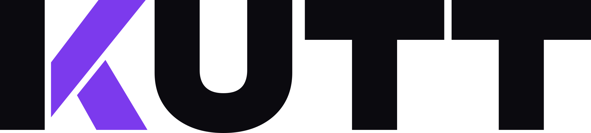

01 / The short version
I'm a studio-based video producer. I record podcasts, film conference stages, shoot talking heads and cut promos for socials and YouTube. Clients send me their raw footage too, and I shape it into one clear story. Made to be watched to the end.
02 / Selected work
Recent Kutts
03 / What I do
From the studio floor to every screen.
One person, one studio, every step. Planning, lights, cameras, sound and the edit all happen under one roof.
- 01
Podcasts
Multi-camera studio recording, a clean edit, and short clips cut for socials.
- 02
Conference video
Speaker sessions, panels and highlight reels that capture the room.
- 03
Talking heads
Interviews and to-camera pieces, lit and miked so people look and sound their best.
- 04
Social and YouTube promos
Ads, cut-downs and vertical edits built for the feed they live in.
- 05
Montages from your footage
Send me the raw clips. I find the story and cut it together.
- 06
Studio production
Set, lights and sound ready to go, so shoot days run calm and on time.